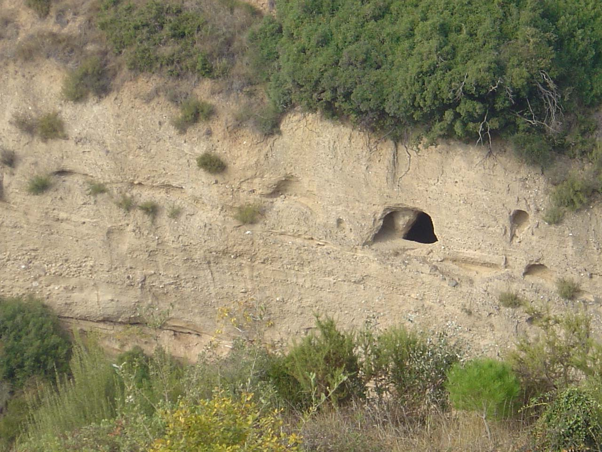
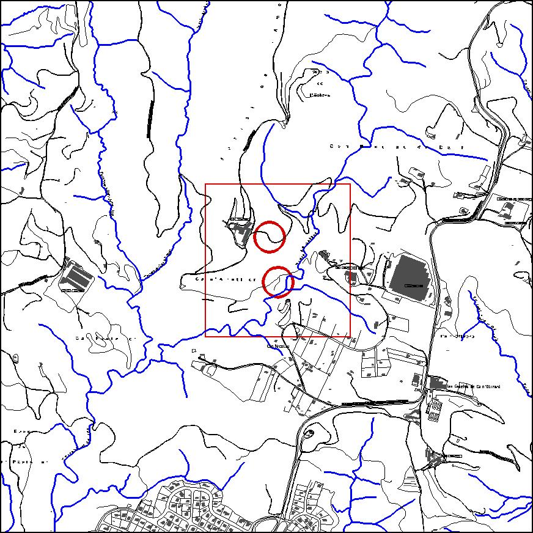

|  |  |
Nom de l’element: Els Columbaris
Clau d’identificació: D.02 i D04
Nucli o indret: A les parets del torrent de Salzes, entre Can Nicolau de Dalt i Ca n’Ametller.
UTM: X= 413.401, Y= 4.595.417, 145 m snm.
Règim del sòl: Sòl no urbanitzable.
Època de construcció i tipologia:
Es tracta de tres columbaris amb nínxols d’època romana o inicis de l’Edat Mitjana, en els quals es guardaven les cendres dels seus difunts. Un dóna a la vertent de Can Nicolau de Dalt i els altres dos a Ca n’Ametller. Les mides oscil·len entre 2 i 3m de profunditat i 1 a 1,5m d’amplada.
1.2. Estat de conservació:
El columbari de la vertent de Can Nicolau de Dalt està en mal estat. S’hi ha abocat terres.
1.3. Ús actual:
Patrimoni històric-cultural.
1.4. Accessibilitat a l’indret:
Accés difícil, només a través de ràppel, al trobar-se en parets verticals del torrent de Salzes.
Es tracta d’unes restes funeràries datades d’època romana – principis de l’Edat Mitjana.
3.1. Usos admesos:
Espais lliures, recreatiu cultural.
3.2. Condicions d’ordenació:
Segons Pla Especial a redactar.
3.3. Accés
Accés difícil, només a través de ràppel, al trobar-se en parets verticals del torrent de Salzes.
BCIL (Bé Cultural d’Interès Local)